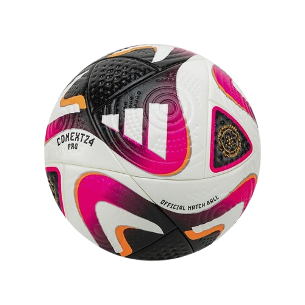
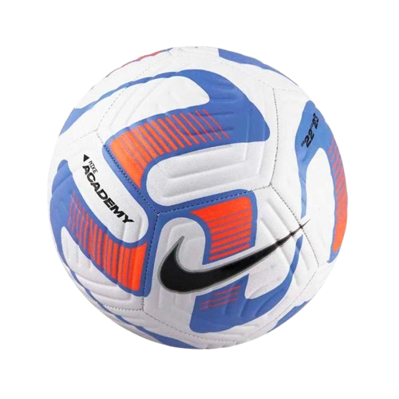
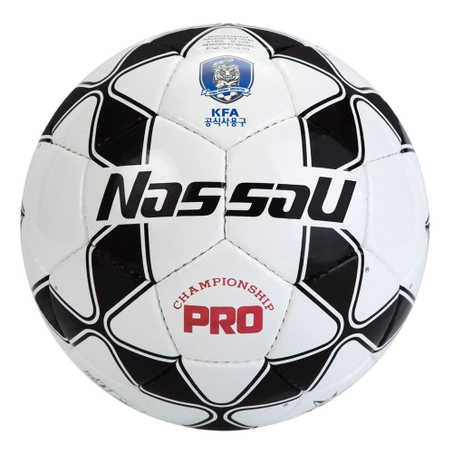

Adidas Conext 24 Pro: Balón oficial con diseño dinámico y tecnología avanzada para torneos internacionales.

Nike Academy: Balón de entrenamiento con gran visibilidad y control, ideal para prácticas y partidos recreativos.Adidas AFA Balón Oficial: Diseño inspirado en la cultura futbolística argentina, con detalles en azul y dorado.

Nassau KFA: Balón oficial de la Asociación de Fútbol de Corea del Sur, con diseño clásico en blanco y negro.